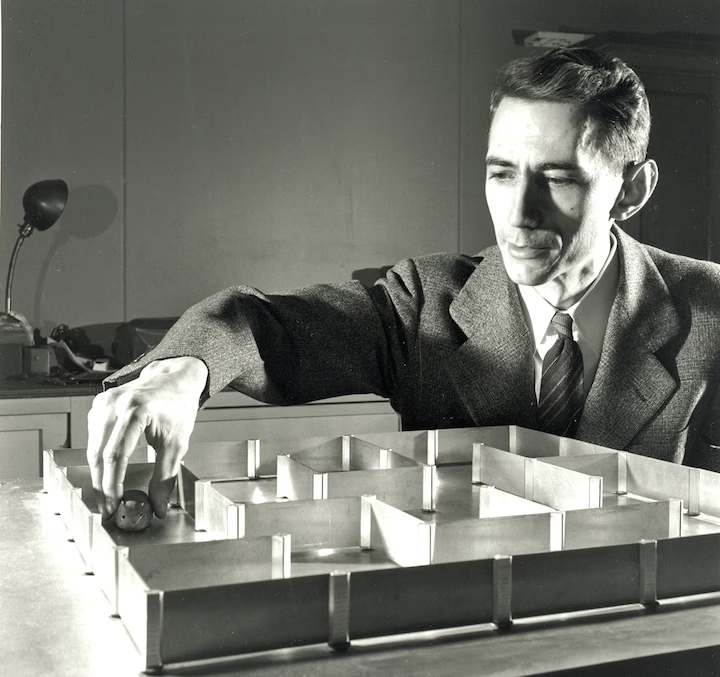

Основные достижения и изобретения

Дата статьи:
Создание теории информации
В 1948 году опубликовал работу «Математическая теория связи», где заложил фундамент для цифровой передачи данных, сжатия и помехоустойчивости
Введение понятия «бит»
Шеннон предложил использовать слово «бит» как базовую, неделимую единицу измерения информации.
Применение булевой алгебры к схемам
В своей магистерской диссертации (1938) он доказал, что логические операции (И, ИЛИ, НЕ) можно реализовать с помощью электрических реле и переключателей. Это стало основой для проектирования цифровых компьютеров.
Основы научной криптографии
В 1950 году В 1949 году написал работу «Теория связи в секретных системах», где математически доказал абсолютную стойкость одноразовых блокнотов (шифра Вернама) и заложил принципы современной криптографии.
Изобретения и роботы
Создал механическую мышь «Тезей» (1950), которая могла находить выход из лабиринта (один из первых примеров самообучающейся машины), а также электромеханические игрушки, шахматного робота и устройства для жонглирования.